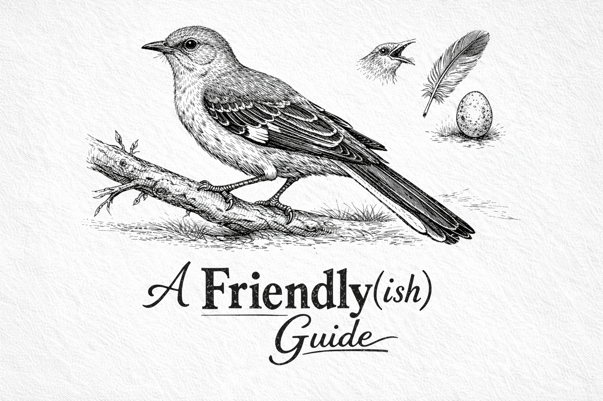

Lambda Calculus: A Friendly(ish) Guide to Computing Without Numbers, Variables, or Common Sense
Welcome to an interactive journey through the fundamentals of lambda calculus! This tutorial teaches you how to compute anything using only functions.
What is Lambda Calculus?
Lambda calculus is a formal system for expressing computation based on function abstraction and application. Created by Alonzo Church in the 1930s, it serves as the theoretical foundation for functional programming languages.
In lambda calculus, everything is a function. There are no numbers, booleans, or data structures in the traditional sense. Instead, we encode these concepts using only functions. This might seem impossible at first, but you'll discover it's elegantly simple.
Core Concepts
- Abstraction: Creating functions (λx.E)
- Application: Applying functions to arguments
- Reduction: Simplifying expressions by substitution
Note: This tutorial uses JavaScript to demonstrate lambda calculus concepts. While JavaScript isn't a pure functional language, it supports first-class functions, making it perfect for learning lambda calculus interactively.
Prerequisites
- Basic understanding of functions in programming
- Familiarity with arrow function syntax (x => y)
- No advanced math required!
What You'll Learn
- How to represent data using only functions
- How to perform arithmetic without numbers
- How to build data structures from functions
- How recursion works at a fundamental level
- The theoretical foundations of functional programming
Tutorial Chapters
Chapter 1: Lambda Calculus Notation (Or: Learning the Language)
Master the syntax and rules of lambda calculus. Learn about abstraction, application, beta reduction, and the foundations of functional programming.
Chapter 2: Combinators (Or: Functions All The Way Down)
Learn the building blocks of lambda calculus: Identity, Constant, and Self-application combinators.
Chapter 3: Church Encodings (Or: Yes, No, and Maybe So)
Discover how to represent booleans and logic using only functions. Build conditionals and boolean operators.
Chapter 4: Church Numerals (Or: Counting Without Numbers, Naturally)
Represent numbers as repeated function application. Learn arithmetic operations: addition, multiplication, and more.
Chapter 5: Data Structures (Or: How to Stack Turtles)
Build lists and pairs from functions. Learn how to create and manipulate complex data structures.
Chapter 6: Recursion (Or: See Chapter 6)
Explore recursive functions like factorial and Fibonacci. Understand thunking and lazy evaluation.
Chapter 7: Advanced Topics (Or: Artium Obscura Functionis*)
Prove lambda calculus is Turing complete. Explore connections to modern programming and the theoretical foundations of computation.
Practice Challenges
Ready to test your understanding? Try our interactive coding challenges where you implement lambda calculus concepts yourself.
New! Lambda Challenges - 18 hands-on exercises covering combinators, Church encodings, numerals, and more. Write real code and get instant feedback.
Quick Demo
Here's a taste of what you'll learn. This is the Identity combinator, the simplest lambda function:
// Lambda: λx.x
const Id = x => x
Id(5) // Returns: 5
Id("hi") // Returns: "hi"
Id(Id) // Returns: Id (a function!)
The Identity function simply returns its argument unchanged. While it seems trivial, it's a fundamental building block for more complex functions.
Interactive Learning
Throughout this tutorial, you'll find:
- Live Demonstrations: See lambda calculus in action
- Interactive Widgets: Experiment with functions yourself
- Visual Reductions: Watch step-by-step evaluation
- Practical Examples: Real code you can run and modify
JavaScript Limitations: Lambda calculus is elegant and infinite, but JavaScript has practical limits. Deeply recursive functions may cause stack overflow errors. We'll highlight these limitations and explain workarounds.
Ready to Begin?
Start with Chapter 1: Lambda Calculus Notation to learn the language of lambda calculus.